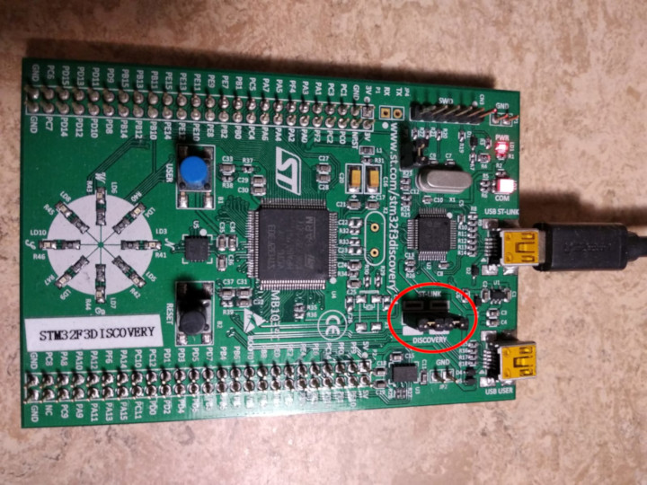

引言
欢迎阅读嵌入式Rust之书, 本书是使用Rust在如微控制器(MCU)的"裸金属"嵌入式系统上编程的引导
谁应使用Rust进行嵌入式开发
嵌入式Rust为任何想要在嵌入式系统上享受Rust提供的高级功能及安全性的人所提供. (也可以看看Who Rust Is For)
概览
这本书的目标是:
-
让开发者开苏上手Rust嵌入式开发. 例如, 如何建立开发环境
-
分享当前使用Rust进行嵌入式开发的最佳实践. 例如, 如何最好地使用Rust编写更加正确的嵌入式应用
-
在某些情况下提供一个开发指南. 例如, 如何在一个项目中混用C与Rust
本书试着尽可能涵盖各种体系, 但是为了让读者与作者~~还有翻译~~更轻松, 在所有实例中都是用ARM Cortex-M架构. 但是, 本书并不建立在读者熟悉该架构的基础上, 会在需要的地方解释架构的细节.
这本书适合谁
本书面向具有一定嵌入式背景或者对Rust熟悉的人, 但是我们相信每个对嵌入式Rust编程感兴趣的人都可以从本书中学到东西. 对于那些没有任何经验知识的人, 建议您阅读 "先决条件" 部分并且补全缺少的知识, 以便从书中获得更多知识并且提升阅读体验. 你可以查看 "其他资源" 部分来查找你想获得的知识对应资源.
先决条件
-
你对使用Rust很熟悉, 并且在桌面环境Rust程序写过, 跑过, 捉过虫. 对Rust2018版本熟悉, 应为本书使用Rust 2018
-
熟悉使用其他语言, 如C, C++, Ada开发调试嵌入式系统, 熟悉如以下概念:
- 交叉编译
- 内存映射外设
- 中断
- 通用接口, 如I2C, SPI, 串口等
其他资源
如果你对上面提到的东西不熟, 或者你想对本书提到的一个概念有更加深刻的了解, 你可以看看下面这些资源, 会很有用.
| Topic | Resource | Description |
|---|---|---|
| Rust | Rust Book | If you are not yet comfortable with Rust, we highly suggest reading this book. |
| Rust, Embedded | Discovery Book | If you have never done any embedded programming, this book might be a better start |
| Rust, Embedded | Embedded Rust Bookshelf | Here you can find several other resources provided by Rust's Embedded Working Group. |
| Rust, Embedded | Embedonomicon | The nitty gritty details when doing embedded programming in Rust. |
| Rust, Embedded | embedded FAQ | Frequently asked questions about Rust in an embedded context. |
| Interrupts | Interrupt | - |
| Memory-mapped IO/Peripherals | Memory-mapped I/O | - |
| SPI, UART, RS232, USB, I2C, TTL | Stack Exchange about SPI, UART, and other interfaces | - |
怎么看这本书
这本书默认你从头看到尾. 后面的章节建立在前面的基础上, 并且前面的章节不会深挖某个细节部分, 在后面会重新探讨这个问题
这本书使用ST公司的STM32F3DISCOVERY开发板作为例子. 这个开发板时ARM Cortex-M架构, 尽管基于该架构的大多数CPU的基本功能都是相似的, 但是不同供应商之间的MCU的外设与其他市县细节是不同的, 并且同意供应商之间的MCU也往往有所不同.
出于这个原因, 我们建议你买一块STM32F3DISCOVERY开发板来跟着学习本书中的例子.
为本书做贡献
本书在this repository一起编写并且主要由resources team编写
如果你跟不住本书或是发现本书中某些部分不够清晰明白或者很难学习, 拿着就是一个BUG并且应该在the issue tracker被汇报
欢迎修改文字错误或是增加内容
中文翻译
本书为作者抽空翻译,可能有语义不通顺,如有不明白的地方也请参考英文原版
如果有勘误, 欢迎提出你的想法
同时也复习考研英语
本书仓库
时刻欢迎批评与建议
重用本书资源
本书在以下LICENSES下发布
-
代码示例与Cargo项目均在MIT License与Apache License v2.0下发布
-
本书的文字内容, 图片与图标均根据CC-BY-SA v4.0条款获得许可
太长别看系列: 如果你想在你的作品中使用我们的文字或图片, 你应该:
- 加个提醒, 像是提一下本书, 再加个链接
- 提供CC-BY-SA v4.0的链接
- 说明你是否对内容进行了修改, 并且用相同的协议对进行更改
另外请一定让我们知道这本书帮了你 :gift:
硬件
先让我们熟悉一下陪我们的开发板
STM32F3DISCOVERY ("F3")

这块板子上都有什么?
- STM32F303VCT6 mcu. 这块芯片有:
- 支持单精度浮点的单核ARM Cortex-M4F处理器
- 256 KiB 闪存 (1 KiB = 1024 bytes)
- 48 KiB RAM
- 很多集成外设, 如 计时器, I2C, SPI, USART
- 通过标有"USB USER"的USB接口
- 一个加速度传感器 LSM303DLHC
- 一个磁强计 LSM303DLHC
- 一个陀螺仪 L3GD20
- 8个呈指南针排列的LED
- 第二个mcu STM32F103. 实际上是片上编程\调试器ST-LINK的一部分
关于这块板子更进一步的详细信息, 请参阅STMicroelectronics
警告!: 如果你相对板子施加外部信号, 一定要小心! STM32F303VCT6引脚能承受的电压为3.3V. 更多有关信息, 请参阅用户手册中6.2 Absolute maximum ratings section in the manual
一个 no_std 的Rust环境
嵌入式编程一词用于很多不同种类的涵义. 从只有几KB大小RAM与ROM的8位MCU, 到像是树莓派这样有32/64位四核Cortex-A53 cpu与1GB内存的设备. 编写代码时, 对于不同设备会有不同的限制.
有两种通用的嵌入式变成分类:
托管环境
这种环境与正常的PC环境相似. 这意味这你能够使用系统级接口, 类似POSIX这样的能提供给你与系统交互的原语, 像是文件系统, 网络, 内存管理, 线程等等. 你可能还会有些sysroot和RAM/ROM的限制, 可能还会有些特殊的硬件或I/O. 简而言之, 这类似在一台特殊用途的PC环境上编程.
裸金属
在一个裸金属环境中, 在你的程序开始之前不会有任何代码被加载.
没有OS提供我们没法使用标准库.
相反, 程序和它使用的库(Crates)可以只使用硬件(裸金属)来运行.
为了防止rust使用标准库, 我们使用no_std.
标准库中与平台无关的部分可以通过libcore获取.
libcore中也排除了在嵌入式环境中并不总是理想的东西.
这其中之一就是用于动态内存分配的内存分配器.
如果你需要这个或是其他功能, 会有库(Crates)提供.
libstd运行时
像前面说的, 使用libstd需要系统支持, 但是这并不只是因为libstd至提供了访问OS的通用的抽象的方法, 而且它还提供了一个运行时.
这个运行时, 除了其他事情外, 还负责设置对战一处保护, 处理命令行参数还有在调用程序的main函数之前创建主线程. 这个运行时在no_std环境中不可用.
总结
#![no_std]是一个声明这个crate不会连接到std-crate二十core-crate的crate级别的属性.
libcore是std-crate的一个与平台无关的子集, 对程序将要运行在的系统上没有任何假设(需求).
因此, 它为语言原语,像是float, string和slices等提供api, 和开放的处理器特性, 像是原子操作与SIMD指令.
然而他缺少任何设计平台集成的API.
由于这些属性, no_std与libcore写成的代码能不能够用于任何类型的引导(stage 0)像是加载程序, 固件还有内核.
概述
| feature | no_std | std |
|---|---|---|
| 堆 (动态内存) | * | ✓ |
| 集合 (Vec, HashMap, etc) | ** | ✓ |
| 堆栈溢出保护 | ✘ | ✓ |
| 初始化函数 | ✘ | ✓ |
| libstd 可用 | ✘ | ✓ |
| libcore 可用 | ✓ | ✓ |
| 编写 固件, 内核, 引导加载器 | ✓ | ✘ |
* 只有当你使用 alloc crate并且选择一个合适的分配器, 像是alloc-cortex-m才可用.
** 只有当你使用 collections crate 并且配置一个全局默认的分配器才可用
See Also
工具
处理微控制器涉及到使用集中不同的工具, 因为我们要处理一个与你电脑架构不同的架构, 我们必须要在远程设备上来运行和调试程序.
我们会使用下面列出的工具. 没指定最低版本时, 按理说任何最新版本都能用, 但是我们也列出了经过测试的版本.
- Rust 1.31, 1.31-beta, 或带有 ARM Cortex-M 编译器的更新的工具链
cargo-binutils~0.1.4qemu-system-arm. 测试版本: 3.0.0- OpenOCD >=0.8. 测试版本: v0.9.0 and v0.10.0
- GDB with ARM support. 7.12或更高版本. 测试版本: 7.10, 7.11, 7.12 and 8.1
cargo-generate或git. 这个工具可选但是会让你学习本书更加轻松.
下面来讲为什么我们需要这些工具. 安装说明会在下一页提及.
cargo-generate 或 git
裸金属应用是不标准(no_std)的Rust程序, 需要对链接过程做出一些调整, 以使程序的内存布局正确. 这需要一些额外的文件(像是链接器脚本)和设置(像是连接器参数).
我们已经把这些打包成了一个模板, 这样你就只需要填写确实的信息就行(就想项目名称和目标硬件型号).
我们的模板与cargo-generate兼容, cargo-generate是Cargo的一个子命令, 用来从模板创建新的Cargo项目. 你也可以使用git, curl, wget或浏览器来下载模板.
cargo-binutils
cargo-binutils是Cargo的一系列子命令, 用来更轻松的配合Rust工具链使用LLVM工具. 这些工具包含LLVM版本的objdump, nm和size, 用来检查二进制产物.
与GNU binmutils相比, 使用这些工具的优势在于, (a) 可以无视系统一键安装LLVM工具(rustup component add llvm-tools-preview), (b) 像objdump这样的工具支持所有rustc支持的所有架构, 从 ARM 到 x86_64 应为他们都使用了相同的LLVM后端.
qemu-system-arm
QEMU是个模拟器. 在本书中, 我们使用能够模拟各种ARM系统的变体. 我们使用QEMU来在电脑上运行嵌入式程序. 多亏这个, 你能在没有硬件的情况下学习本书.
GDB
调试器是嵌入式开发中非常重要的一个组件, 因为你并不总是有足够的空间去把气质打到控制台上. 某些情况下, 你的硬件上甚至都没有LED可以闪(呜呜呜).
通常情况下, 涉及到调试的时候, LLDB和GDB差不多, 但是我们还没找到一个与GDB的load命令相同功能的LLDB指令, 这个命令把程序加载到硬件上, 所以我们建议你使用GDB.
OpenOCD
GDB现在还不能直接通过ST-Link调试器和你的STM32F3DISCOVERY开发板沟通. 他需要一个翻译器, Open On-Chip Debugger 缩写 OpenOCD 就是这个翻译器. OpenOCD是在你电脑上运行的, 可以在GDB基于TCP/IP的远程调试协议和ST-LINK基于USB的协议之间进行转换.
OpenOCD还执行其他工作, 作为翻译的一部分, 用于调试STM32F3DISCOVERY开发板上的ARM Cortex-M处理器.
- 他知道如何与ARM CoreSight调试外围设备使用的内存映射寄存器沟通.正是这些CoreSight寄存器允许:
- 断电/观察点操作
- 读写CPU寄存器
- 检测CPU何时银调试而暂停
- 在调试结束后继续CPU执行
- 更多.
- 它还知道如何擦除和覆写mcu的flash
安装工具
此页包含与操作系统无关的工具安装说明:
Rust 工具链
按照https://rustup.rs的教程安装rustup.
NOTE 确保你有1.31或以上版本的编译器. rustc -V应该返回一个更新的版本.
$ rustc -V
rustc 1.31.1 (b6c32da9b 2018-12-18)
为了带宽和磁盘的使用情况, 默认安装只支持本机编译.
要想添加ARM Cortex-M的交叉编译支持, 应该选择下面其一的编译目标.
对于STM32F3DISCOVERY开发板, 应该使用thumbv7em-none-eabihf
Cortex-M0, M0+, M1 (ARMv6-M 架构):
$ rustup target add thumbv6m-none-eabi
Cortex-M3 (ARMv7-M 架构):
$ rustup target add thumbv7m-none-eabi
没有硬浮点的Cortex-M4 and M7 (ARMv7E-M 架构):
$ rustup target add thumbv7em-none-eabi
有硬浮点的Cortex-M4F and M7F (ARMv7E-M 架构):
$ rustup target add thumbv7em-none-eabihf
Cortex-M23 (ARMv8-M 架构):
$ rustup target add thumbv8m.base-none-eabi
Cortex-M33 and M35P (ARMv8-M 架构):
$ rustup target add thumbv8m.main-none-eabi
有硬浮点的Cortex-M33F and M35PF (ARMv8-M 架构):
$ rustup target add thumbv8m.main-none-eabihf
cargo-binutils
$ cargo install cargo-binutils
$ rustup component add llvm-tools-preview
cargo-generate
我们后面用这个来生成项目
$ cargo install cargo-generate
OS相关安装
现在跟着这些教程安装:
Linux
如下是对几种发行版的安装命令
包
- Ubuntu 18.04 及以上 / Debian stretch 及以上
NOTE
gdb-mutliarch是你debug你的ARM Cortex-M程序的GDB命令
sudo apt install gdb-multiarch openocd qemu-system-arm
- Ubuntu 14.04 , 16.04
NOTE
arm-none-eabi-gdb是你debug你的ARM Cortex-M程序的GDB命令
sudo apt install gdb-arm-none-eabi openocd qemu-system-arm
- Fedora 27 及以上
NOTE
arm-none-eabi-gdb是你debug你的ARM Cortex-M程序的GDB命令
sudo dnf install arm-none-eabi-gdb openocd qemu-system-arm
- Arch Linux
NOTE
arm-none-eabi-gdb是你debug你的ARM Cortex-M程序的GDB命令
sudo pacman -S arm-none-eabi-gdb qemu-arch-extra openocd
udev规则
这条规则让你可以使用OpenOCD而不要root权限.
在/etc/udev/rules.d/70-st-link.rules创建文件, 并写入以下内容.
# STM32F3DISCOVERY rev A/B - ST-LINK/V2
ATTRS{idVendor}=="0483", ATTRS{idProduct}=="3748", TAG+="uaccess"
# STM32F3DISCOVERY rev C+ - ST-LINK/V2-1
ATTRS{idVendor}=="0483", ATTRS{idProduct}=="374b", TAG+="uaccess"
然后重新加载udev规则
sudo udevadm control --reload-rules
如果你把板子连接到了电脑, 重新连接.
使用如下命令检查权限:
lsusb
你应该看到如下内容:
(..)
Bus 001 Device 018: ID 0483:374b STMicroelectronics ST-LINK/V2.1
(..)
记一下总线设备号. 用这些数字来创建如下目录/dev/bus/usb/<bus>/<device>. 然后链接目录:
ls -l /dev/bus/usb/001/018
crw-------+ 1 root root 189, 17 Sep 13 12:34 /dev/bus/usb/001/018
getfacl /dev/bus/usb/001/018 | grep user
user::rw-
user:you:rw-
附加在权限后面的+表示存在扩展权限。getfacl命令告诉用户您可以使用这个设备。
现在阅读下一部分
macOS
所有工具都可以用Homebrew安装:
$ # GDB
$ brew install armmbed/formulae/arm-none-eabi-gcc
$ # OpenOCD
$ brew install openocd
$ # QEMU
$ brew install qemu
这就是全部了, 下一部分.
Windows
arm-none-eabi-gdb
ARM为Windows提供了.exe安装器. 从这openocd: https://xpack.github.io/openocd/下载here, 然后跟着说i名安装.
在安装结束之前选择"添加到环境变量"选项. 然后验证工具已经在%PATH%中:
$ arm-none-eabi-gdb -v
GNU gdb (GNU Tools for Arm Embedded Processors 7-2018-q2-update) 8.1.0.20180315-git
(..)
OpenOCD
对Windows现在还没有官方的二进制文件, 但是如果你不想自己编译, xPack项目提供了一个二进制文件. here. 跟着安装说明. 然后更新你的%PATH%环境变量. (如果你使用快速安装C:\Users\USERNAME\AppData\Roaming\xPacks\@xpack-dev-tools\openocd\0.10.0-13.1\.content\bin\)
验证OpenOCD已经在%PATH%中:
$ openocd -v
Open On-Chip Debugger 0.10.0
(..)
QEMU
从官方网站获取QEMU.
ST-LINK USB驱动
你还需要安装USB驱动, 否则OpenOCD不能工作. 跟着安装说明并且保证你安装了正确的版本(32位或64位).
这就是全部了, 下一部分
验证安装
在这一部分我们检查需要的工具/驱动是否被正确安装.
把Discovery开发板连接到电脑. Discovery有两个USB口, 使用在板子中间标着"USB ST-LINK"的口.
也检查ST-LINK的接口是否被污染. 看如下图片, ST-LINK接口被红线圈中.

现在运行如下命令:
$ openocd -f interface/stlink.cfg -f target/stm32f3x.cfg
你应该会得到如下输出并且命令行被阻塞:
Open On-Chip Debugger 0.10.0
Licensed under GNU GPL v2
For bug reports, read
http://openocd.org/doc/doxygen/bugs.html
Info : auto-selecting first available session transport "hla_swd". To override use 'transport select <transport>'.
adapter speed: 1000 kHz
adapter_nsrst_delay: 100
Info : The selected transport took over low-level target control. The results might differ compared to plain JTAG/SWD
none separate
Info : Unable to match requested speed 1000 kHz, using 950 kHz
Info : Unable to match requested speed 1000 kHz, using 950 kHz
Info : clock speed 950 kHz
Info : STLINK v2 JTAG v27 API v2 SWIM v15 VID 0x0483 PID 0x374B
Info : using stlink api v2
Info : Target voltage: 2.919881
Info : stm32f3x.cpu: hardware has 6 breakpoints, 4 watchpoints
内容并不会完全一样, 但你应该会看到有关断点和观察点的最后一行. 如果没什么问题那就关掉OpenOCD然后到下一部分.
如果你没看到 "断点" 这一行, 那试试如下命令.
$ openocd -f interface/stlink-v2.cfg -f target/stm32f3x.cfg
$ openocd -f interface/stlink-v2-1.cfg -f target/stm32f3x.cfg
如果有一条命令成功了, 这意味这你手上的是个旧版本Discovery. 那不会有什么问题, 除了内存设置会在后面有些不同, 到下一部分.
如果这些命令都用不了, 那就试试使用root权限(像是sudo openocd ...). 如果命令能够执行, 那么检查一下udev规则是否正确.
如果到这, 你的OpenOCD还是不能用, 那就来发个issue然后我们来帮你!
开始
在这一部分, 我们会带你写代码, 编译, 烧录, 调试嵌入式程序. 我们会教你QEMU的基础, 一个开源的硬件模拟器, 因此你能不用硬件来运行大部分例子. 很自然的, 唯一需要硬件的章节就是硬件, 在这部分我们使用OpenOCD在STM32F3DISCOVERY
QEMU
我们要开始给LM3S6965编程, LM3S6965是一个Cortex-M3微控制器. 我们选择这个作为开始是应为它能被QEMU模拟,所以你不必在本部分玩弄硬件,专心与工具与编程.
Important 在本教程中我们使用"app"作为项目名. 当你看到"app"这个词的时候,你应该把它换成你给你自己的项目起的名. 或者,你就可以把你的项目名设成"app".
创建一个不含标准库的Rust程序
我们会使用cortex-m-quickstart项目模板来生成一个新项目.
新创建的项目会包含一个基础结构:
一个对嵌入式Rust程序的好的开始.
这个项目还额外包括一个有着几个不同例子的example文件夹.
使用 cargo-generate
首先安装 cargo-generate
cargo install cargo-generate
然后生成一个新项目
cargo generate --git https://github.com/rust-embedded/cortex-m-quickstart
Project Name: app
Creating project called `app`...
Done! New project created /tmp/app
cd app
使用git
克隆仓库
git clone https://github.com/rust-embedded/cortex-m-quickstart app
cd app
然后修改Cargo.toml中的占位符
[package]
authors = ["{{authors}}"] # "{{authors}}" -> "John Smith"
edition = "2018"
name = "{{project-name}}" # "{{project-name}}" -> "awesome-app"
version = "0.1.0"
# ..
[[bin]]
name = "{{project-name}}" # "{{project-name}}" -> "awesome-app"
test = false
bench = false
两者都不用
下载最新的cortex-m-quickstart然后解压
curl -LO https://github.com/rust-embedded/cortex-m-quickstart/archive/master.zip
unzip master.zip
mv cortex-m-quickstart-master app
cd app
或者你可以打开cortex-m-quickstart,然后点绿色的"Clone or download",然后选择"Download ZIP".
然后按照第二部分"使用git"中修改占位符.
程序概览
为了方便,src/main.rs中已经有了很重要的部分:
#![no_std]
#![no_main]
use panic_halt as _;
use cortex_m_rt::entry;
#[entry]
fn main() -> ! {
loop {
// your code goes here
}
}
这个和标准的Rust程序不太一样,咱们来凑近一点看看.
#![no_std]声明这个程序不会连接到std标准库.
作为代替会连接到core
#![no_main]声明这个程序不会使用大部分Rust使用的main函数接口.
使用no_main主要原因是在no_std中使用main需要每夜版的Rust.
use panic_halt as _;.这个库提供一个定义panic行为的panic_handler.
我们会在Panicing章节中讨论更多细节.
#[entry]是一个由cortex-m-rt提供的属性,用来标记程序的入口.
当我们不用标准的main入口我们就需要其他的方式声明程序的入口,就是#[entry].
fn main() -> !.我们的程序只会运行在目标硬件上,所以我们不希望他停止!
我们使用一个发散函数 (->!符号)来确保编译期不会出问题.
交叉编译
下一步是为Cortex-M3架构进行交叉编译.
在知道编译目标时($TRIPLE)使用cargo build --target $TRIPLE会很方便.
很幸运,模板中的.cargo/config已经提供了答案.
tail -n6 .cargo/config
[build]
# Pick ONE of these compilation targets
# target = "thumbv6m-none-eabi" # Cortex-M0 and Cortex-M0+
target = "thumbv7m-none-eabi" # Cortex-M3
# target = "thumbv7em-none-eabi" # Cortex-M4 and Cortex-M7 (no FPU)
# target = "thumbv7em-none-eabihf" # Cortex-M4F and Cortex-M7F (with FPU)
为了给Cortex-M3架构交叉编译,我们要使用thumbv7m-none-eabi.
这个编译目标并不是自带的,如果你没有的话,现在就装:
rustup target add thumbv7m-none-eabi
如果thumbv7m-none-eabi已经.cargo/config中设为默认值,那下面这两条命令是一样的
cargo build --target thumbv7m-none-eabi
cargo build
检查
现在我们在target/thumbv7m-none-eabi/debug/app有一个非本机的ELF二进制文件.
我们可以用cargo-binutils来检查它.
使用cargo-readobj来查看ELF头来确认这是个给ARM的二进制文件.
cargo readobj --bin app -- -file-headers
注意:
--bin app是个target/$TRIPLE/debug/app的语法糖--bin app如果需要的话会重新编译
ELF Header:
Magic: 7f 45 4c 46 01 01 01 00 00 00 00 00 00 00 00 00
Class: ELF32
Data: 2's complement, little endian
Version: 1 (current)
OS/ABI: UNIX - System V
ABI Version: 0x0
Type: EXEC (Executable file)
Machine: ARM
Version: 0x1
Entry point address: 0x405
Start of program headers: 52 (bytes into file)
Start of section headers: 153204 (bytes into file)
Flags: 0x5000200
Size of this header: 52 (bytes)
Size of program headers: 32 (bytes)
Number of program headers: 2
Size of section headers: 40 (bytes)
Number of section headers: 19
Section header string table index: 18
cargo-size可以打印二进制文件中连接器的部分.
cargo size --bin app --release -- -A
我们使用--release来获取优化的版本.
app :
section size addr
.vector_table 1024 0x0
.text 92 0x400
.rodata 0 0x45c
.data 0 0x20000000
.bss 0 0x20000000
.debug_str 2958 0x0
.debug_loc 19 0x0
.debug_abbrev 567 0x0
.debug_info 4929 0x0
.debug_ranges 40 0x0
.debug_macinfo 1 0x0
.debug_pubnames 2035 0x0
.debug_pubtypes 1892 0x0
.ARM.attributes 46 0x0
.debug_frame 100 0x0
.debug_line 867 0x0
Total 14570
A refresher on ELF linker sections
.textcontains the program instructions.rodatacontains constant values like strings.datacontains statically allocated variables whose initial values are not zero.bssalso contains statically allocated variables whose initial values are zero.vector_tableis a non-standard section that we use to store the vector (interrupt) table.ARM.attributesand the.debug_*sections contain metadata and will not be loaded onto the target when flashing the binary.
IMPORTANT: ELF文件包含了类似Debug信息等等元数据,所以他们的在磁盘上的大小并不能
准确的反映烧录在硬件上的大小.通常使用cargo-size来检查二进制文件真正的大小
cargo-objdump可用于反汇编二进制文件.
cargo objdump --bin app --release -- --disassemble --no-show-raw-insn --print-imm-hex
NOTE 如果以上命令报错
Unknown command line argument, 可以看看这个bug: https://github.com/rust-embedded/book/issues/269NOTE 这个根据不同系统有所区别.新版本的rustc,LLVM还有库会生成不同的二进制文件. 我们删节了一些说明,意识代码段变小.
app: file format ELF32-arm-little
Disassembly of section .text:
main:
400: bl #0x256
404: b #-0x4 <main+0x4>
Reset:
406: bl #0x24e
40a: movw r0, #0x0
< .. truncated any more instructions .. >
DefaultHandler_:
656: b #-0x4 <DefaultHandler_>
UsageFault:
657: strb r7, [r4, #0x3]
DefaultPreInit:
658: bx lr
__pre_init:
659: strb r7, [r0, #0x1]
__nop:
65a: bx lr
HardFaultTrampoline:
65c: mrs r0, msp
660: b #-0x2 <HardFault_>
HardFault_:
662: b #-0x4 <HardFault_>
HardFault:
663: <unknown>
运行
下一步我们要在QEMU上运行我们的嵌入式程序!
这次我们使用hello这个例子来搞事.
为了方便,如下是example/hello.rs的源码
//! Prints "Hello, world!" on the host console using semihosting
#![no_main]
#![no_std]
use panic_halt as _;
use cortex_m_rt::entry;
use cortex_m_semihosting::{debug, hprintln};
#[entry]
fn main() -> ! {
hprintln!("Hello, world!").unwrap();
// exit QEMU
// NOTE do not run this on hardware; it can corrupt OpenOCD state
debug::exit(debug::EXIT_SUCCESS);
loop {}
}
这个程序使用一个叫semihosting的东西来打印信息到宿主机. 等到了真正的硬件上,就需要一个调试会话才能用.
让我们来开始编译这个例子:
cargo build --example hello
产出的二进制文件在target/thumbv7m-none-eabi/debug/examples/hello.
为了在QEMU上运行这个应使用如下命令:
qemu-system-arm \
-cpu cortex-m3 \
-machine lm3s6965evb \
-nographic \
-semihosting-config enable=on,target=native \
-kernel target/thumbv7m-none-eabi/debug/examples/hello
Hello, world!
这条命令应该在输出信息后成功推出(exit code = 0). 在*nix上你可以用如下命令确认:
echo $?
0
让我们来破解QEMU命令: